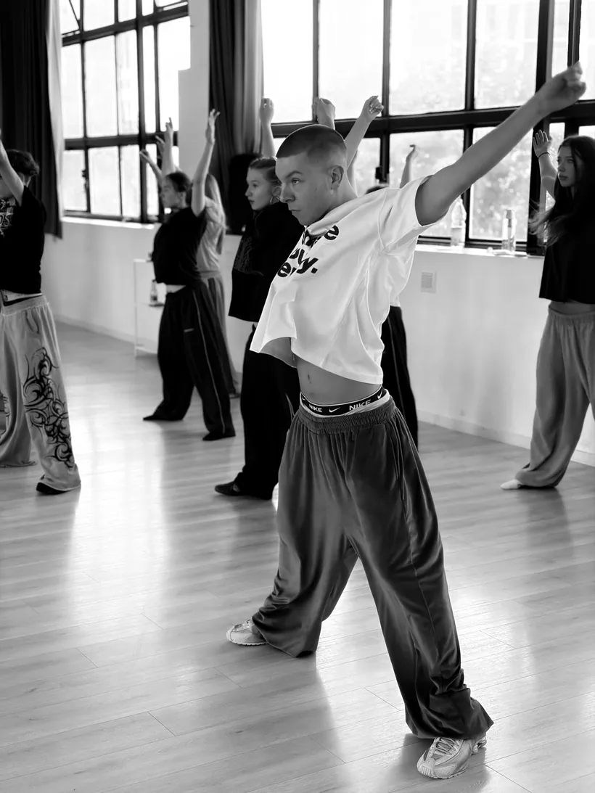

Niezależny projekt kreatywny · warsztaty taneczne
Historia, idea i filozofia do Poznania.
Nadchodząca edycja · program, instruktorzy i zapisy.
Kadry z pierwszej edycji do Poznania vol. I.

Fotografie z pierwszej edycji do Poznania vol. I.
Masz pytania dotyczące warsztatów lub współpracy?
Wyślij zgłoszenie zainteresowania kolejną edycją warsztatów.
Nie wypełniaj tego pola
Prototyp formularza. Przed publikacją organizator musi uzupełnić informacje o przetwarzaniu danych i uruchomić obsługę zgłoszeń.
Aby skorzystać z animowanej podróży, włącz JavaScript.